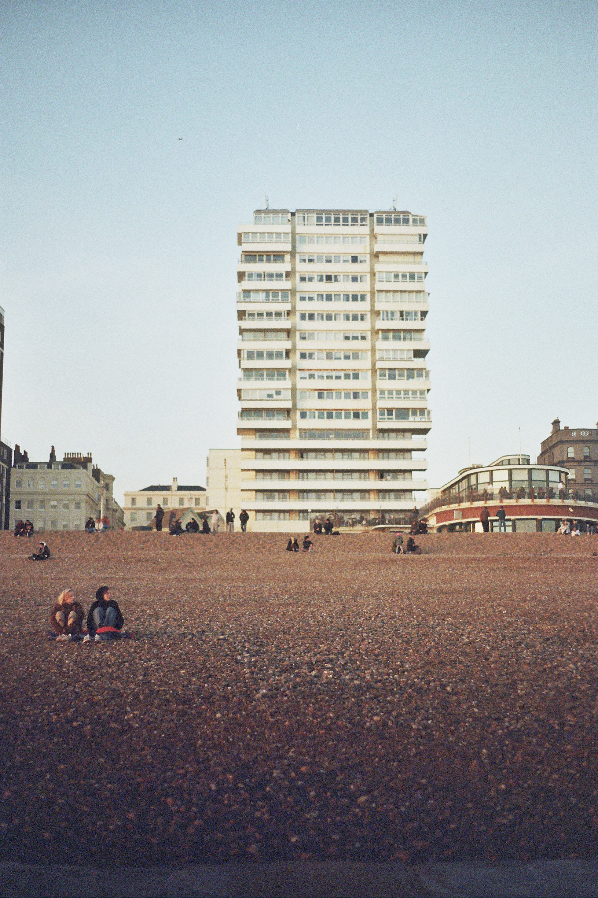
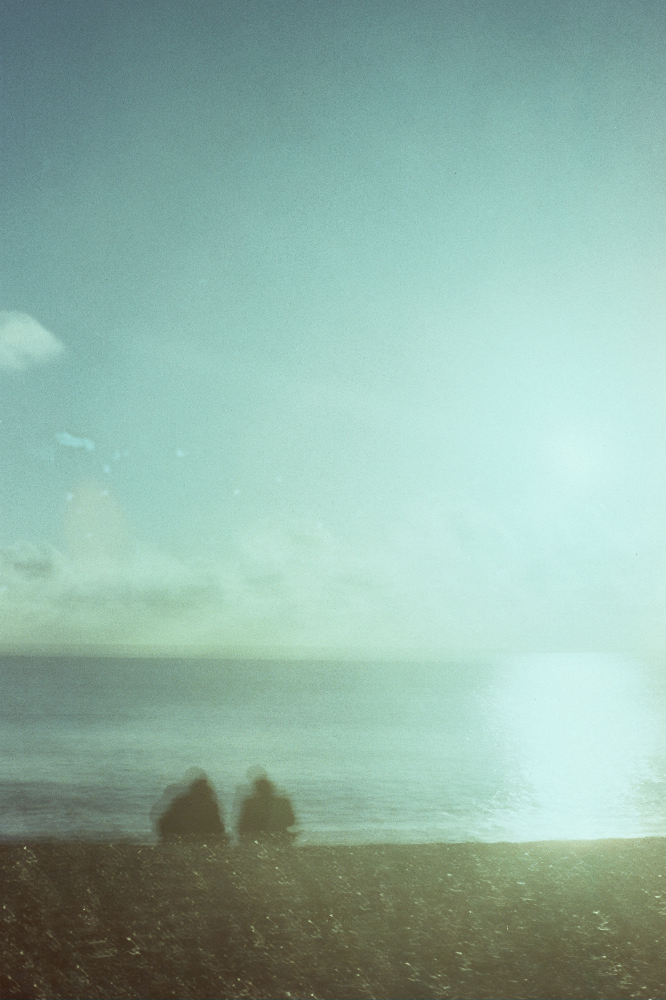

When did streaming on the Underground become a thing? These days every carriage will have at least a few commuters transfixed by Friends or Mad Men or Love is Blind, thanks to the miracle of offline playback and Transport for London’s gradual 4G rollout. For all its grime and chaos, there was something endearing about the tube’s holdout against the ultra-connectivity of the surface world, which oozes into every space we inhabit and promises something better. At work, in the gym, in the bathroom, and now while travelling 85 feet deep into the earth, we fulfil our modern function to consume content and produce data.
Sleep, the CEO of Netflix once joked, is their toughest competition.
Except it’s not a joke. Those who own the platforms that we tap, swipe, and stare at are deadly serious about capturing our attention, as frequently and for as long as possible.

Silicon Valley software designers have described how social media is hardwired to be addictive: recommendation algorithms, the nudge of notifications, the slot-machine high of the infinite scroll. In a world where the amount of information available to us has increased to near infinity and the cost of transmitting it has reduced to near zero, tech platforms are locked into an aggressive race to churn out content and “capture eyeballs”—competing not just with rival companies but also our own intentions, what we actually want to look at. Most weekday nights I end up doomscrolling during the time I wanted to read before bed (and then, inevitably, during the time I wanted to be asleep).
This business model has profound social impacts. Former Google exec turned tech philosopher James Williams argues that the main risk is not that our attention is “occupied or used up” as though it were a finite resource, but that we “lose control over our attentional processes”. It’s like shopping in a big Aldi—the problem is not how many items you’ve bought but the dizzying pace the cashiers chuck it at you. It’s not the content itself, but what feels like the constantly accelerating speed of it all. Trends, microtrends, the 24-hour global news cycle, clickbait media, a million podcasts, meme of the week, white boy of the month, AI slop, it girls, and shitposts. Your stats waiting to be improved on Strava, your soulmate waiting to be found on Hinge, and all the people on Instagram who seem to be having a better time than you. Keeping up?
Our attention is extracted so relentlessly that we risk forgetting how to turn it inwards.
In our jobs and our leisure time, the tide of information that passes through our heads each day leaves little energy for the mind to attend to itself, to wander freely. We need space to maintain our sense of interiority, the inner room where we interpret the world and arrange it like furniture, according to our values, desires, and anxieties, in private patterns only we understand. It’s where we decide what matters to us and resolve to turn thought into action. Controlling our attention is therefore a political struggle. “Big Brother isn't watching,” In the 2002 novel Lullaby, Chuck Palahniuk writes, “he's singing and dancing and making sure your attention is always filled. With the world always filling you, and your imagination atrophied, no-one has to worry about what's in your mind.”
We have an innate need for recognition and connection, and digital media can trigger something resembling these feelings. But this imitation leaves us unfulfilled. Studies have shown that virtual communication can trick our brains—think about the weird exhaustion of seeing your face in work video calls, and how quickly we got bored of Covid Zoom quizzes. Technology allows us to speak instantly to someone who could be anywhere in the world, and have our friends and family at the touch of a button, but these online interactions cannot reproduce the richness and depth of in-person contact. They don’t require the careful navigation of body language, eye contact, non-verbal cues, and empathy which amount to emotionally satisfying encounters.
A screen doesn’t satisfy our need to feel seen. This is one reason we are facing a new social epidemic of loneliness. A survey by the charity Eden Project Communities found 16-24 year olds in the United Kingdom were three times more likely to say they feel lonely than 65-74 year olds, making Gen Z the “loneliest generation”, despite being the most “connected”. Alongside social factors like the decimation of youth services in the 2010s, technology has played an inescapable role in this phenomenon. The automation of high street services, pressures of social media performativity, and general skyrocketing of screen time have all negatively impacted young people’s social skills and confidence.

We’ve been conditioned to neutralise boredom through muscle memory. Stood on a platform or waiting for a coffee, we reach for our phones when a moment of stillness lingers a little too long. Boredom grounds us in the passage of time and makes us aware of the passing seconds, which is why the weird timelessness of the infinite scroll is the perfect refuge. When the flow of stimulation runs dry, our attention turns inward and we become awkwardly self-conscious. It’s not so much boredom itself which drives us to a screen in these situations but the fear of boredom, of being stuck in a room with only ourselves for company.
What if instead of running from it, we stuck around to see what it brings? “Boredom is the dream bird that hatches the egg of experience,” wrote Walter Benjamin in 1936. “Rustling in the leaves drives him away.” Dig into the flat feeling of boredom and we might find solitude, a deeper self-understanding, and the mind’s innate ability to conjure the whole world.
This is not an argument for spending our already limited free time watching paint dry. It’s a call to consider what free time means in our current attention economy. In a world of endless, coercive distractions, we should see the arrival of boredom—where nothing is holding our attention—as a kind of freedom in itself.
Every time we deny the conditioned reflex to scroll, stream or swipe, we open the door to generative inner space. This doesn’t require some monastic physical isolation—just as loneliness can be most profound in the company of others, solitude is a mental state we can cultivate inside the white noise of modern life. In this solitude, where the mind can think both for itself and with itself, we exercise our own judgement and switch off the autopilot of ideology.